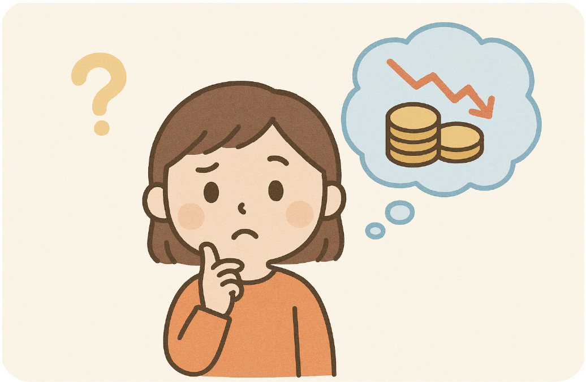
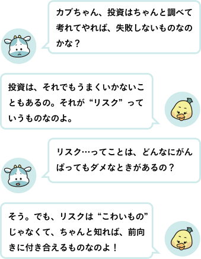
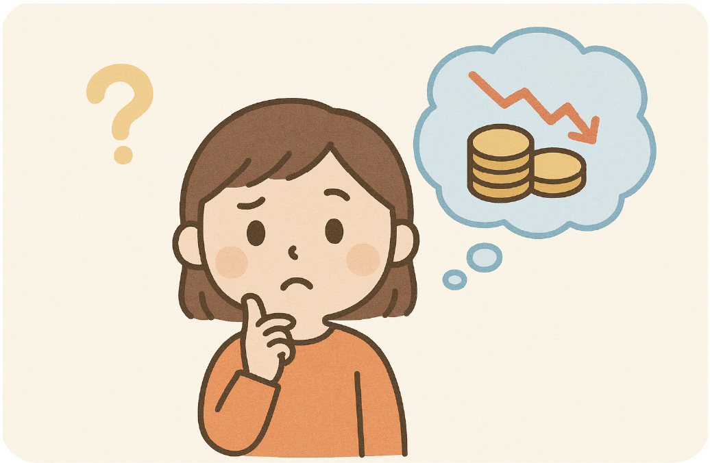
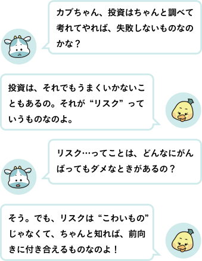
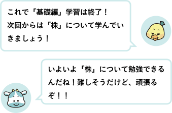

● リスクって、どういうこと？

「リスク」という言葉には、「こわい」「あぶない」というイメージがあるかもしれません。
でも、本当の意味はちょっとちがいます。
「リスク＝変化する可能性のこと」なんです。
たとえば――
・思ったよりもうまくいかない
・予定していたより時間がかかる
・反対に、うまくいってもっと増えることもある！
「どうなるか、はっきりわからない」という“ゆれ”のことを「リスク」と呼びます。
● 投資は、いつもうまくいくとは限らない
「リスク＝変化する可能性のこと」なんです。
たとえば――
・思ったよりもうまくいかない
・予定していたより時間がかかる
・反対に、うまくいってもっと増えることもある！
「どうなるか、はっきりわからない」という“ゆれ”のことを「リスク」と呼びます。
● 投資は、いつもうまくいくとは限らない
たとえば、ある会社のことをしっかり調べて、
「この会社はこれから人気が出そうだ」と思って投資したとします。
でも、突然ライバル会社が新しい商品を出したり、 社会のルールが変わったりして、思ったようにいかないこともあります。
そうすると、株の価値が下がって、お金が減ってしまうこともあるのです。
● 大事なのは、「失敗＝学び」にすること
でも、突然ライバル会社が新しい商品を出したり、 社会のルールが変わったりして、思ったようにいかないこともあります。
そうすると、株の価値が下がって、お金が減ってしまうこともあるのです。
● 大事なのは、「失敗＝学び」にすること
たとえうまくいかなくても、
「どうしてこうなったのかな？」 「どんな情報が足りなかったのかな？」 「次はどんなふうに行動しようかな？」
――そうやって考えることができれば、それはぜんぶ「経験」になります。
投資は「ぜったい成功する方法」ではなくて、 「自分の頭で考えて、未来のために決めること」なんです。
「どうしてこうなったのかな？」 「どんな情報が足りなかったのかな？」 「次はどんなふうに行動しようかな？」
――そうやって考えることができれば、それはぜんぶ「経験」になります。
投資は「ぜったい成功する方法」ではなくて、 「自分の頭で考えて、未来のために決めること」なんです。
● 投資って、お金の未来を考えること
投資には、いいこともあれば、うまくいかないこともあります。 でも、それを通して「考える力」や「未来を見つめる力」が育ちます。
これまで学んできたことをふりかえると…
①お金は、物と物をつなぐ大切な“道具”
②「使う」「貯める」「増やす」のバランスが大事
③銀行はお金の“橋わたし”をしている
④投資は「考えて使う」ことで、社会や自分の未来をつくる行動
⑤リスクがあっても、考えて行動することが学びになる
投資には、いいこともあれば、うまくいかないこともあります。 でも、それを通して「考える力」や「未来を見つめる力」が育ちます。
これまで学んできたことをふりかえると…
①お金は、物と物をつなぐ大切な“道具”
②「使う」「貯める」「増やす」のバランスが大事
③銀行はお金の“橋わたし”をしている
④投資は「考えて使う」ことで、社会や自分の未来をつくる行動
⑤リスクがあっても、考えて行動することが学びになる
